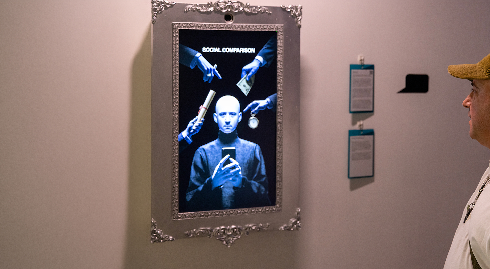
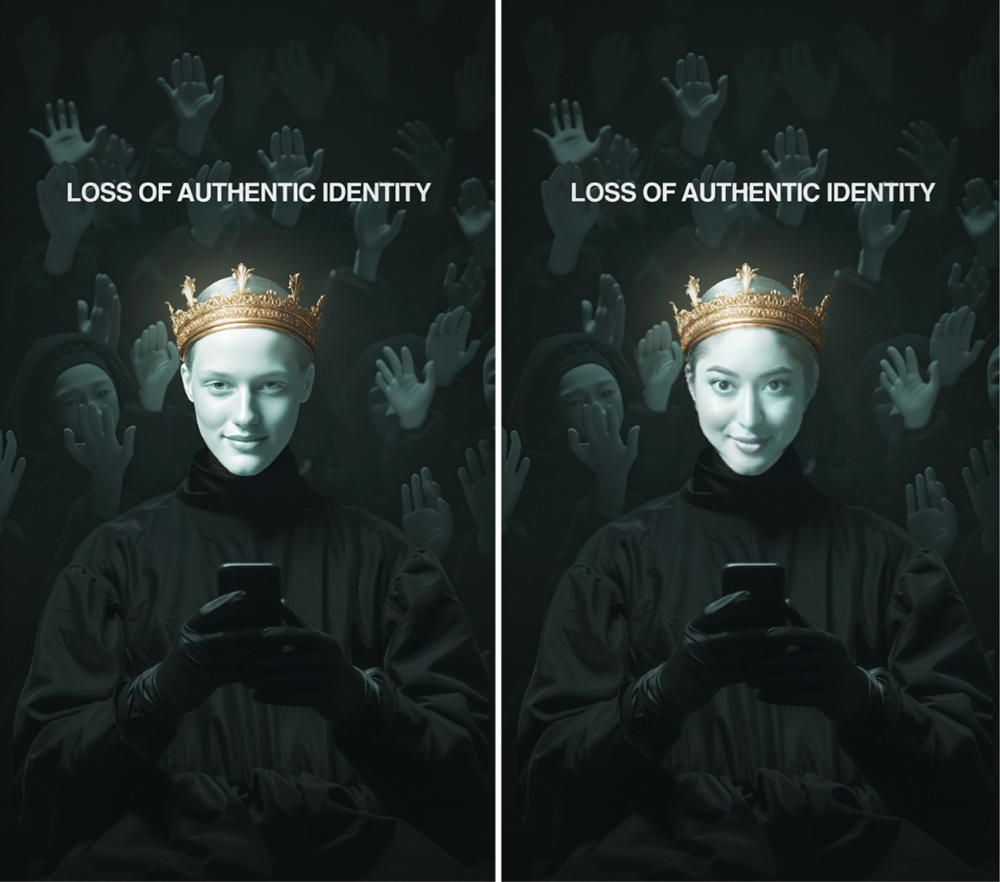
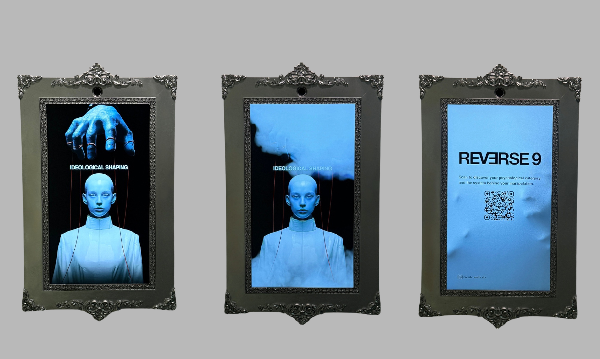
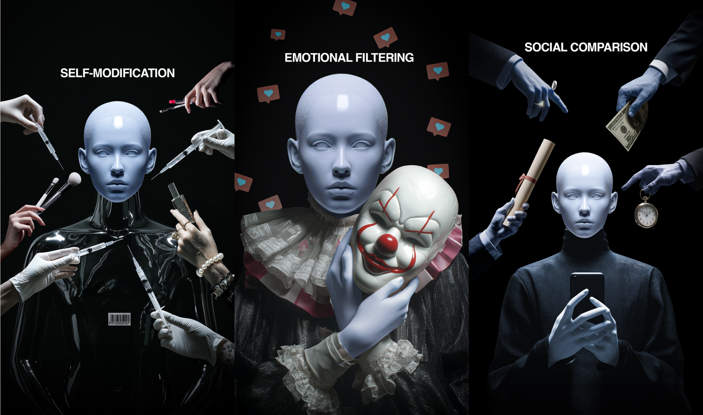
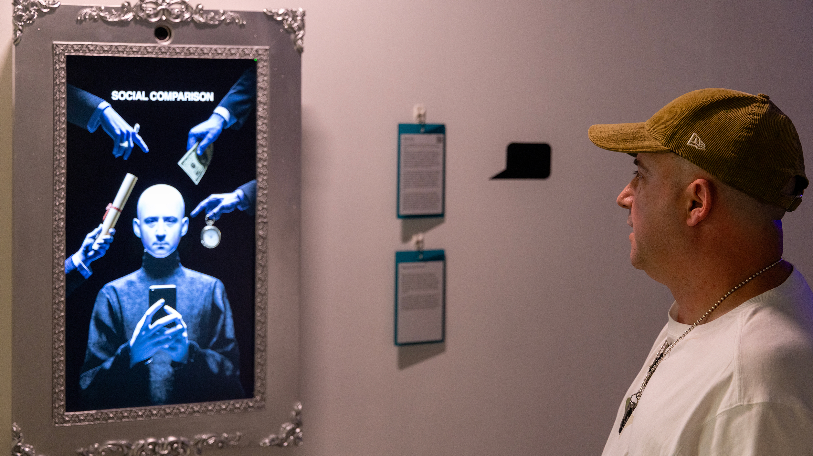

Personal Project
Digital Mirror Installation
Language
Python
Year
2025
Tech Stack
OpenCV · MediaPipe FaceMesh · DeepFace · InsightFace · Predictive model · Real time processing
Interactive system exploring how social media platforms transform cognition, behaviour and personal identity.
Reverse9 is an immersive installation where the viewer’s face is captured, analysed and transformed into one of nine personalised visual outcomes. The system processes live facial input through a predictive model and assigns one of nine categories, each linked to a custom designed illustration. The final output integrates the viewer’s face into the selected visual, producing a personalised result. Each image shows how social media transforms the current viewer.
All visuals are based on original illustrations created specifically for the installation.
System Logic



